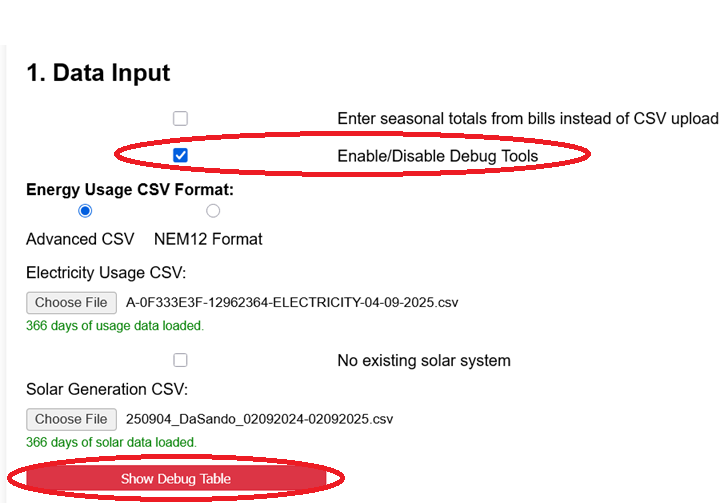
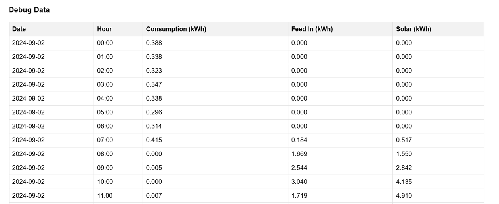
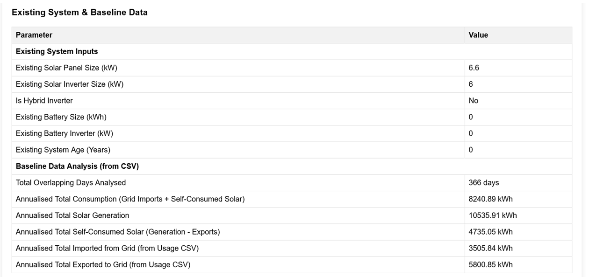
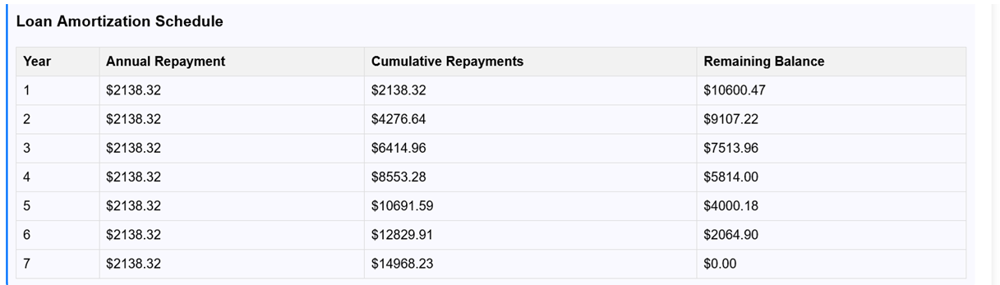
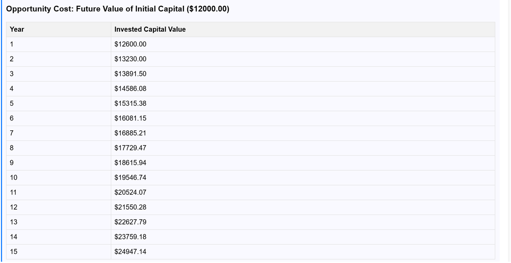
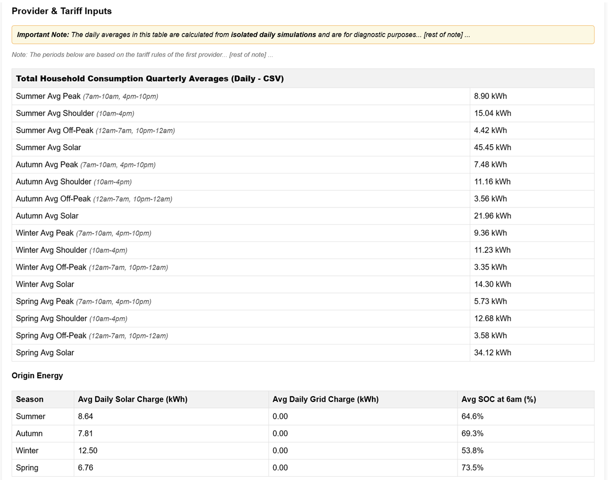
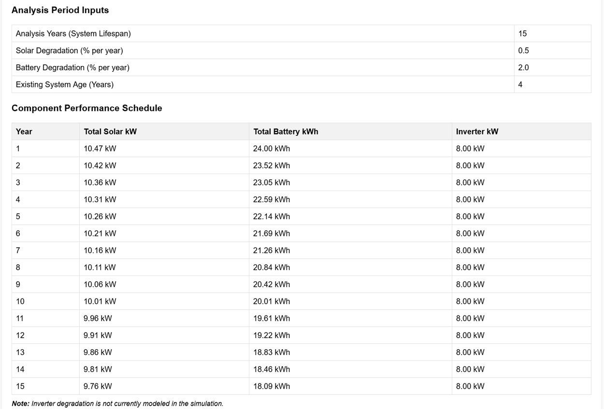
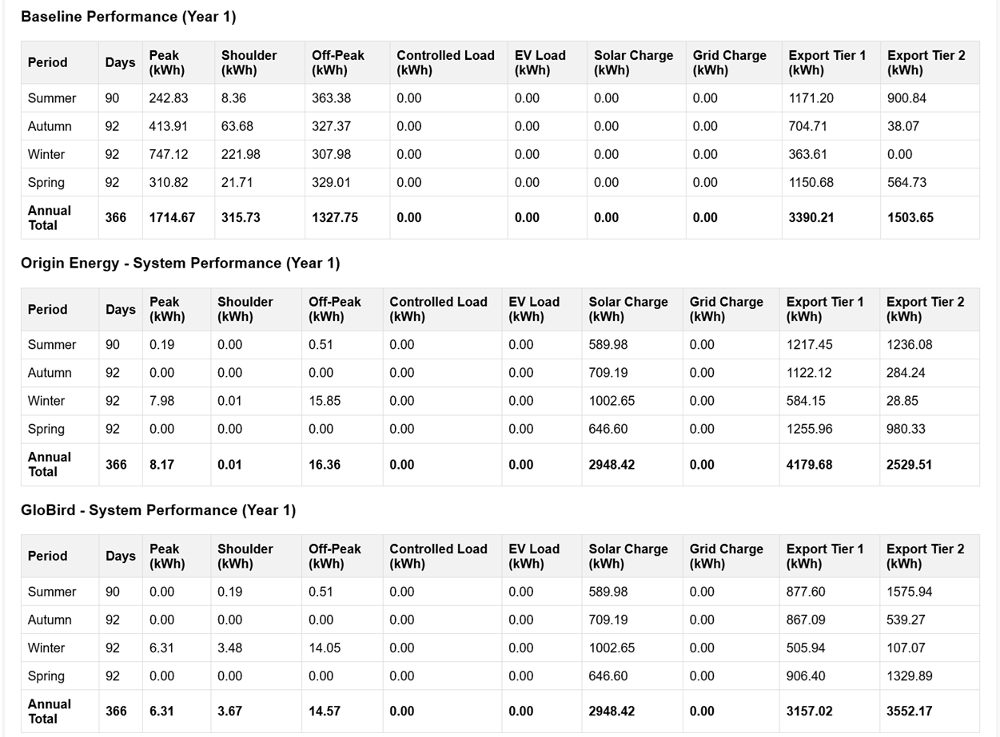

The analyser includes a set of optional "Debug Tables" that show you the intermediate data and calculations. These are useful for advanced users who want to verify the simulation's inputs and outputs in detail.
In Section 1: Data Input, check the box labelled "Enable/Disable Debug Tools".

Checking this box will make a red Show Debug Table button appear at the bottom of most sections (Sections 1-6).
Click the Show Debug Table button within any section to view the data relevant to that section. Clicking the button again will hide the table.
Tip: The tables show data based on the *current* inputs in the UI. If you run a new analysis, some tables (like the Provider debug table) will automatically refresh with the latest simulation results if they are left open.
Here is a breakdown of what each debug table displays:
Shows the raw hourly data (Consumption, Feed In, Solar) that the analyser is using for its simulation. In CSV mode, it shows the first 100 days of data. In Manual Mode, it shows the calculated hourly profiles based on your total inputs.

Displays the "Existing System Inputs" you've entered. More importantly, it shows a "Baseline Data Analysis" (annualised totals for Consumption, Generation, Self-Consumption, etc.) calculated from your provided data (CSV or Manual Totals).

Shows the year-by-year calculation for your loan amortization schedule (if enabled) and the future value of your capital based on the discount rate (if enabled).


This is one of the most useful tables. It shows the calculated "Total Household Consumption" averages (Peak, Shoulder, etc.) based on your baseline provider's rules. It then shows the simulated battery performance (Avg. Solar Charge, Avg. Grid Charge, Avg. SOC at 6am) for each provider you've selected.

Shows a year-by-year schedule of the degraded performance (Total kW and Total kWh) for your solar panels and batteries based on the degradation rates you've set.

This button (labelled "Show Raw Data Tables") appears with your results. It shows the final seasonal and annual totals for Year 1 performance, comparing your Baseline scenario to each of your selected Provider (New System) scenarios.
